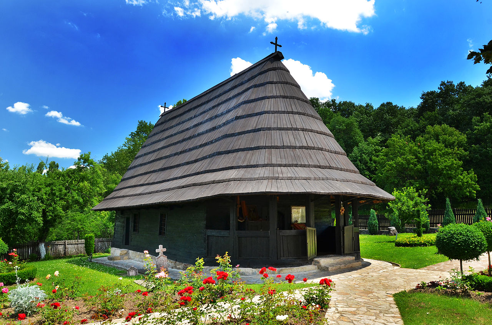

Овај сајт је само пројекат који покушава да уради постојећи сајт Техничке Школе "Никола Тесла" из Велике Плане у бољем и модернијем стилу
чисто из забаве. Овај сајт ни на који начин није повезан са Техничком Школом "Никола Тесла", Велика Плана.
Ако желите званичне информације и објаве, линк од сајта посетите други линк испод.
Мој GitHub Профил
Линк званичног сајта Техничке Школе "Никола Тесла", Велика Плана
Техничка школа у Великој Плани (наравно, не под тим именом) основана је 1954. године, као државна школа мешовитог типа за школовање
радника занатских занимања. У време оснивања школе у тадашњој ФНРЈ, на рушевинама Другог светског рата и њиме задатим геополитичким
околностима, градило се "социјалистичко друштво". Доношењем Закона о предаји фабрика радницима 1950. године у земљи се започиње са
"радничким самоуправљањем". Захваљујући финансијској помоћи великих сила и кредитима, а на таласу великог напретка науке и технологије
до ког је дошло у двадесетом веку, земља се убрзано индустријализује, електрификује, изграђује се инфраструктура. То је и у нашој
средини захтевало нова занимања која је наша школа могла само делимично да обезбеди.
Локалном индустријом диктиране потребе (није погрешно рећи да је и сам град настао на индустрији меса и железници) налагале су да
приоритет имају месари и трговци. Године 1962. школа је имала 4 одељења у трогодишњем трајању. У периоду до 1975. године тај број се
постепено повећавао, праћен увођењем нових занимања: ковач, кројач, посластичар, кинооператер, бравар, фризер, обућар, аутомеханичар...
Од 1975. године са почетком "заједничких основа" а касније са "усмереним образовањем", школа се налази у оквиру образовног центра
"Светозар Марковић" као "организација удруженог рада" под називом ''Никола Тесла''. Долази до експанзије у погледу техничке
опремљености и кадровске оспособљености школе, уводе се и четворогодишњи образовни профили машинске (тада металске) струке и настаје
Техничка школа ''Никола Тесла'' са око 18-20 одељења.
Са школском 1977/1978. годином почиње реформа образовања коју је покренуо Стипе Шувар и креће се са такозваним "усмереним образовањем".
Те школске године стартује нови Закон о усмереном образовању и васпитању по коме ће се генерације ђака школовати пуну једну деценију.
У јуну 1980. године завршили су четврти разред последњи ученици који су се школовали по гимназијском програму, тако да је са школском
1980/1981. годином престало да постоји гимназијско а у потпуности се прешло на усмерено образовање. Овај систем школства познат је под
именом „Шуварица“ (заинтересованог читаоца упућујемо на рад "Поглед уназад" Антрополошка анализа увођења усмереног образовања у СФРЈ,
Јана Баћевић). Процену резултата и квалитета "усмереног образовања" препустићемо историји и компетентнијим аналитичарима, ми ћемо овде
само рећи да је систем до деведесетих година напуштен а од 1992. у Србији постоје три врсте школа: гимназије, стручне школе (у које
спада наша) и уметничке школе.
Ако кренемо од зграде школе на запад путем за Смедеревску Паланку за три и по километра наићи ћемо на скретање улево које ће нас за још 4 км довести до манастира Копорин. Овај средњовековни манастир, подигнут 1402. године, задужбина је деспота Стефана Лазаревића. Идући даље путем ка селу Радовање, на десетом километру од Копорина наћи ћемо се у спомен комплексу Радовањски Луг, важном, на жалост трагичном, месту српске историје где је 26. јула 1817. године убијен Карађорђе Петровић, вођа Првог српског устанка. Од центра Велике Плане, крећући се главном улицом (Цариградским путем) ка Старом Селу на око 3 км наилазимо на скретање удесно, којим ћемо за 2 км наићи на манастир "Покајница". Подигнут је као црква брвнара 1818. године, годину дана након Карађорђеве смрти, од стране Вујице Вулићевића а у знак покајања због убиства свог кума. Такође Цариградским друмом али супротним смером, ка северу, доћи ћемо до Крњева. У центру села, на око 13 км од наше школе налази се најстарија сеоска школа у Србији, подигнута давне 1779. године у црквеној порти.
